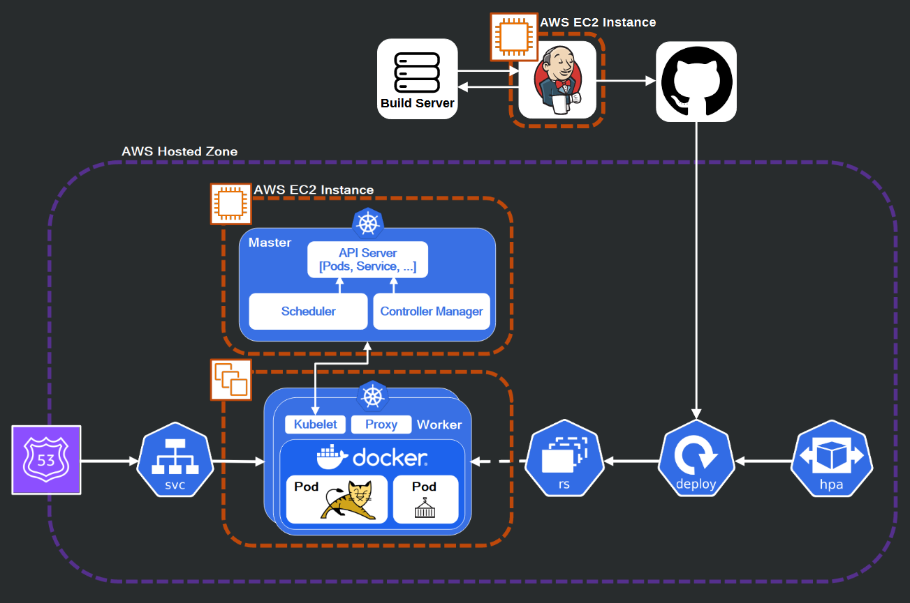

Jake Hansen
Technical Solutions Engineer
Epic Systems
Empowering users through seamless and intuitive experiences, my
mission is to craft software that effortlessly connects, simplifies,
and delights, ensuring accessibility and efficiency in every interaction.
About Me
I am driven by a desire to explore the structure that drives the systems we use every day. I originally studied Industrial and Systems engineering for an understanding of the principles that design for efficiency and for people in modern manufacturing. My recent experience took me to Epic Systems where I contributed to software used every day by Home Health nurses. Today, I am taking on personal projects for a deep dive into server systems, networking, and cloud architecture to explore the systems that are the background of today's technology.
Presently, I have completed a project for the back-end that supports this website and future projects. My goal is to explore additional resources including Amazon ECS, CloudFormation, and methodologies for data storage such as simple storage, block storage, and SQL databases.
When I'm not working on personal projects, I'm usually mountain biking, kayaking, skiing, writing stories, or putting on armor with fellow nerds to fight in the SCA! (pictured above)
How is this Website Hosted?
The diagram below depicts the back-end infrastructure that supports this website and future projects. It uses knowledge of AWS for a domain registrar and scalable compute capacity, Docker for containerization, Kubernetes for deployment orchestration, as well as some smaller applications such as Apache Tomcat for hosting and Jenkins to provide and manage the CI/CD pipeline.
The resources used for this application including a deeper explanation of the resources involved can be found for free in my GitHub repository.
